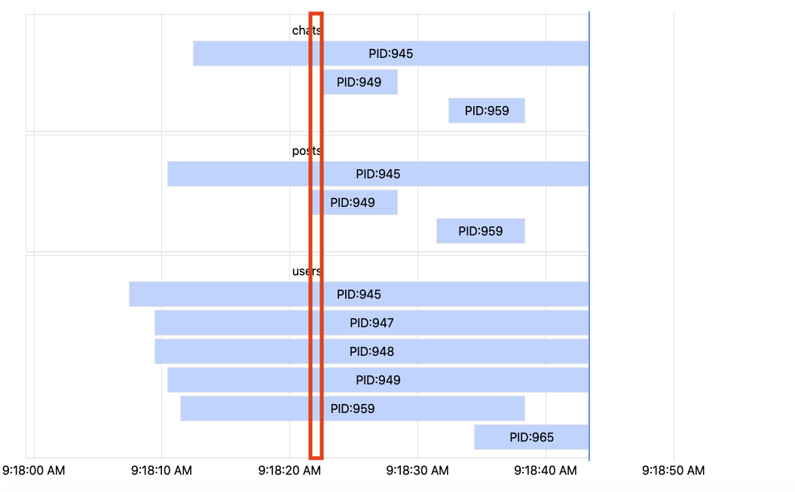
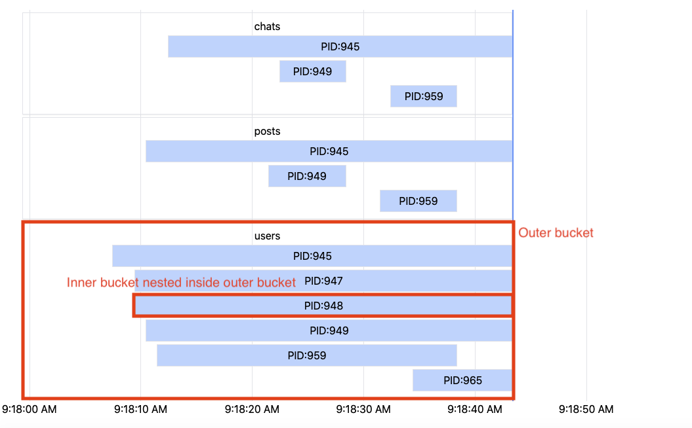

Types
RootBucket#
RootBucket is the top level bucket which represents one time slice in the timeseries data.
| Field | Type | Description |
|---|---|---|
| t_start | string | Start time of the data slice of your data bucket. It maps to the position of the bar's left side, if the data for bar is newly entering. |
| t_end | string | End time of the data slice of your data bucket. It maps to the position of the bar's right side, if the data for bar is exiting. |
| entries | Array<Bucket> | List of data buckets, where each item will map to an individual bar in the chart. |

It represents one time slice (whose width maps to the time interval) of the entire timeseries data.
Bucket#
| Field | Type | Description |
|---|---|---|
| key | string | Key of the bucket. Should be unique among its peer buckets. |
| start | number | Start time of the bucket data, in milliseconds. NOTE: This will automatically be filled and overwritten by monochron if you're working with TimeseriesChart. Only applicable if you're working with RealtimeChart. |
| end | number | End time of the bucket data, in milliseconds. NOTE: This will automatically be filled and overwritten by monochron if you're working with TimeseriesChart. Only applicable if you're working with RealtimeChart. |
| data | unknown | Data object of your entry. You can use this field to format your row as you like. In TypeScript you will need to cast this to your known type, i.e. const person = bucket.data as Person; |
| buckets | Array<Bucket> | Optional. monochron supports recursive rows in the chart (i.e. rows in a row in a row, etc). Structure buckets if you're intending to do this. |

It represents a single row (at whatever depth) in the chart.
RenderRowFunc#
The function you can use to format your row. See renderRow prop of TimeseriesChart or RealtimeChart.
Row#
You cannot import and use Row directly. You will be passed this component in RenderRowFunc